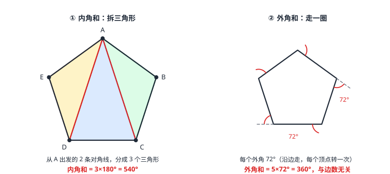

多边形与内角和
n 边形的内角和是 (n-2)× 180^\circ——从一个顶点出发画对角线，把大图形拆成 (n−2) 个三角形；外角和恒为 360°，与边数无关。多边形不会算就拆成三角形，沿多边形走一圈转过的总角度恰是一整圈。
| 所属主题 | 四边形 |
|---|---|
| 所属模块 | 几何 |
| 课标学段 | 第四学段（7~9 年级） |
| 前置知识 | 三角形的基本性质 |
| 核心素养 | 推理能力几何直观运算能力 |
教材定位
人民教育出版社《人教版（2024版）义务教育教科书·数学》
八年级下册第21章 四边形21.1 四边形及多边形
对应八下 21.1：多边形的内角和与外角和。
说明
多边形：在平面内，由若干条线段首尾顺次相连组成的封闭图形。边数最少的多边形是三角形。n 边形有 n 个顶点、n 条边、n 个内角；连接不相邻两个顶点的线段叫对角线，n 边形从一个顶点出发能画 (n−3) 条对角线，整个图形共有 n(n-3)/2 条对角线。各边都相等、各角都相等的多边形叫正多边形：正三角形、正方形、正五边形都是它的成员（正多边形与圆的关系到 正多边形与圆 再展开，这里先用名字）。
两条核心公式：内角和——n 边形的内角和等于 (n-2)× 180^\circ，边数每加 1，内角和加 180^\circ；外角和——任何多边形的外角和都等于 360^\circ，与边数无关。内角和随边数增长，外角和却永远不变，这是多边形最反直觉也最好用的一对事实。
使用场景
蜂巢与地砖：蜂巢是正六边形格子——每个内角 120^\circ，三个 120^\circ 恰好拼满一圈 360^\circ，所以能无缝铺满平面；正三角形、正方形能密铺、正五边形不能，判据全在「整数个内角能否拼成 360°」。
施工放线：多边形地块放完线，用内角和公式核对测量结果——n 边形量出的 n 个内角之和应恰等于 (n-2)× 180^\circ，对不上就说明某条边放歪了，这是工程上快速自查闭合误差的办法。
注意点
内角和公式别记成 n× 180^\circ：从一个顶点出发只能画 (n−3) 条对角线，分出的是 (n−2) 个三角形——不是 n 个。代入 n=4 验算：四边形内角和是 360^\circ，若用 n×180° 就错成 720^\circ。
外角和与边数无关，永远 360^\circ——不要因为「边多角多」就以为外角和也在涨；也不要拿内角和公式去套外角和，两件事走两条路。
「每个内角相等」才能用内角和 ÷ n：只有等角多边形（最常见是正多边形）才有「平均分」一说；一般多边形的内角各不相同，只能逐个求或利用外角关系。
证明

图 1：左——从 A 出发的对角线把五边形分成 3 个三角形，内角和 = 3×180° = 540°；右——正五边形每个外角 72°，外角和 = 5×72° = 360°
证明
结论 1从一个顶点出发作对角线，可以把多边形分成若干个三角形。
拆三角形：五边形 ABCDE，从顶点 A 出发作对角线 AC、AD，两条对角线把五边形分成 △ABC、△ACD、△ADE 三个三角形（图 1 左）。
关键一步依据是分割的定义：从一个顶点出发的对角线互不交叉（都从同一点出发、连到不同的非相邻顶点），所以每一块都是三角形，既不重叠也不遗漏，多边形的角问题就此化成三角形的角问题。
结论 2五边形的内角和是 3× 180^\circ=540^\circ。
数角：每个三角形的内角和是 180^\circ（三角形的基本性质 已证）。三个三角形的所有内角拼在一起，恰好就是五边形的全部内角——B、C、D 处的角被对角线切开又拼回原角，A、E 处的角根本没动。所以五边形内角和 =3× 180^\circ=540^\circ。
关键一步依据是三角形内角和定理（三角形的基本性质 已证）与角的和的可加性：被对角线切开的 B、C、D 处的角切开后拼回去还是原来的角，A、E 处的角原封未动，所以切分前后的内角总量相等，多边形的内角和就等于各段三角形内角和的总和。
结论 3n 边形的内角和等于 (n-2)× 180^\circ。
一般化：n 边形从一个顶点出发可画 (n−3) 条对角线（相邻顶点连不成对角线），分出 (n−2) 个三角形，所以内角和 =(n-2)× 180^\circ。
关键一步依据是对角线条数的计数与分割：从一个顶点出发，除了与它相邻的两个顶点外，其余 n−3 个顶点各连一条对角线，共 n−3 条；每多一条对角线就多切出一个三角形，所以分出的三角形数是 (n−2)。三角形内角和 180° 乘以三角形个数，就得到 (n−2)×180°。
结论 4任何多边形的外角和都是 360^\circ，与边数无关。
外角和：每个顶点处「内角 + 外角 =180^\circ」，n 个顶点合计 n× 180^\circ；减去内角和 (n-2)× 180^\circ，得外角和 =2× 180^\circ=360^\circ，与 n 无关。直观版（图 1 右）：沿多边形走一圈回到起点，面朝的方向转回原样，转过的总角度恰是一整圈 360^\circ，无论围墙有多少个拐角。
关键一步依据是每个顶点处内角与外角互补（和为 180°），n 个顶点相加得 n×180°，再减去内角和 (n−2)×180°，n 被消掉只剩 2×180°=360°——所以外角和与边数无关。直观上沿多边形走一圈转过的整圈正是这个 360°。
动手实验
方格纸上任意画一个四边形，把四个角撕下来拼到一点——四个角拼成一个周角，严丝合缝，验证内角和 =360^\circ。再用量角器量一个任意五边形的五个内角，加起来应为 540^\circ；换成六边形是 720^\circ。
解题思路
求内角和：直接套 (n-2)× 180^\circ；反过来由内角和求边数，解方程 (n-2)× 180^\circ=\text内角和，n 必须是整数——若解不出整数，先查题目条件。
求某个内角：先算内角和，再减去已知的其余内角；正多边形则先算外角 360^\circ÷ n，再取补角得内角——「先外后内」往往比直接除更快更稳。
对角线条数：n(n-3)/2 用于「从一个点出发最多连出几条不重复的线」类计数题；分三角形数 (n−2) 用于内角和推导，两者别混。
按场景的例题
例 1（场景：图形设计） 正五边形徽章
一枚正五边形徽章，它的每个内角是多少度？
解：正五边形五个内角相等。内角和 =(5-2)× 180^\circ=540^\circ，每个内角 =540^\circ÷ 5=108^\circ。也可以走外角这条路：每个外角 =360^\circ÷ 5=72^\circ，内角 =180^\circ-72^\circ=108^\circ，两条路答案一致。
答：每个内角为 108^\circ。
例 2（场景：测量与工程） 地块闭合校验
一个六边形地块，量得其中五个内角依次为 100^\circ、110^\circ、120^\circ、130^\circ、140^\circ，第六个内角是多少度？若放线合格，第六个角应满足什么条件？
解：六边形内角和 =(6-2)× 180^\circ=720^\circ。已量五角之和 =100+110+120+130+140=600^\circ，第六个内角 =720^\circ-600^\circ=120^\circ。若量出的第六个角明显偏离 120^\circ，说明放线不闭合，需返工。
答：第六个内角为 120^\circ。
例 3（场景：竞技与游戏） 多边形转盘
一个每个外角都相等的多边形转盘，其中一个外角是 36^\circ。这个转盘是几边形？每个内角是多少度？
解：外角和恒为 360^\circ，每个外角相等且为 36^\circ，边数 =360^\circ÷ 36^\circ=10，是正十边形。每个内角是外角的补角：180^\circ-36^\circ=144^\circ。
答：正十边形，每个内角 144^\circ。
常用推论
多边形的内角中至多 3 个是锐角：每个锐内角对应一个大于 90^\circ 的外角，若有 4 个锐内角，外角和就超过 4× 90^\circ=360^\circ，矛盾。
正 n 边形的每个内角 =180^\circ-\dfrac360^\circn，每个外角 =\dfrac360^\circn——先算外角再取补角，比直接用内角和除以 n 少一步大数运算。
正三角形（60^\circ）、正方形（90^\circ）、正六边形（120^\circ）的内角都能整除 360^\circ，所以能单独密铺平面；正五边形（108^\circ）不行。
易错点
错把内角和记成 n× 180^\circ。
为什么错忘了从顶点出发的 (n−3) 条对角线只分出 (n−2) 个三角形，不是 n 个。
正确内角和 =(n-2)× 180^\circ；n=4 时应得 360^\circ。
错认为边数越多，外角和越大。
为什么错外角和恒为 360^\circ，与边数无关；随边数增长的是内角和。
正确任何多边形外角和都是 360^\circ。
错正多边形每个内角 =360^\circ÷ n。
为什么错360^\circ÷ n 算的是外角；内角与外角是互补关系，不是同一个角。
正确内角 =180^\circ-\dfrac360^\circn（即先求外角，再取补角）。
直观理解
内角和是「拆」出来的：大图形不会算，就拆成会算的小图形——三角形是最小也是最先被驯服的零件，从一点出发把它切出来。外角和是「走」出来的：沿多边形散步一圈回到原点，身体转过的总量必然是一整圈 360^\circ，围墙拐一百个弯也是如此。一个向内拆、一个向外走，殊途同归于三角形的 180^\circ 与一圈的 360^\circ。